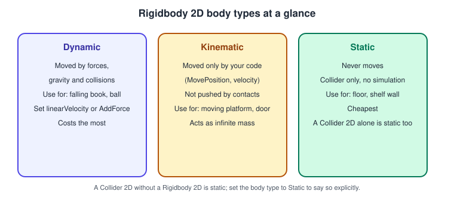
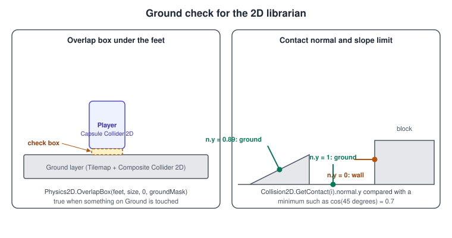
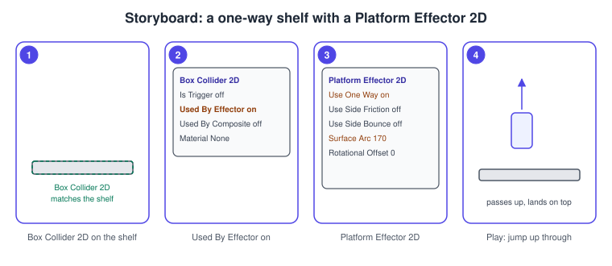

2D Physics
|
This content was generated with the assistance of AI and should be verified against the official documentation before being relied on in production. |
Two-dimensional games do not use the 3D physics of 3D Physics with a flat scene; Unity has a separate 2D physics system with its own bodies, colliders, joints and settings. It works on a plane (the X and Y axes), rotates only around Z, and is cheaper than 3D because every collision test is two-dimensional. This page covers the components in the Editor, the scripting API, the effectors that make platforms and conveyors, and the newer low-level API based on Box2D version 3.
The facts were checked in November 2026 against the Unity 6.3 LTS manual (6000.3). Where Unity 6.5 or 6.6 changed something, the text says so. The running example here is the 2D variant of the Bookshelf: a side-on shelf level in which a small librarian walks, jumps onto one-way shelves and pushes books. The tilemap and sprite setup is in 2D Games; this page is its physics half. The code assumes a Unity 6.3 project with the Input System package (the default), and runs on every platform Unity supports. The engine-neutral background (broad phase, contact manifolds, solvers) is in Physics, Audio and Input Basics.
The 2D physics world
-
The two worlds are separate. A Rigidbody 2D never collides with a 3D collider, and the 2D components have a
2Dsuffix (Collider2D,Joint2D,OnCollisionEnter2D). Mixing them silently does nothing. -
The plane is X and Y. Positions use the X and Y axes (the Z coordinate is only for draw order and the camera), and a Rigidbody 2D rotates only around Z. Physics 2D has its own gravity (default (0, -9.81)) and its own settings.
-
Settings. Edit > Project Settings > Physics 2D holds the gravity, the default material, the Layer Collision Matrix for 2D, the simulation mode, velocity and position iterations, and contact thresholds.
-
The built-in simulation is separate from the low-level API. The Rigidbody 2D and Collider 2D components described first on this page are one system; the
LowLevelPhysics2DAPI (renamedPhysicsCore2Din Unity 6.5), described at the end, is another and does not interact with them.
Source: Manual: 2D physics and Manual: Physics 2D settings
Rigidbody 2D

A Rigidbody 2D puts a GameObject under the control of the 2D physics simulation. Its Body Type decides everything else:
| Body type | Behavior | Use it for |
|---|---|---|
Dynamic |
Moved by forces, gravity and collisions; all properties (mass, damping, gravity scale) are available. The default. |
The player, falling books, balls. |
Kinematic |
Moved only by your code (velocity, |
Moving platforms, doors, anything scripted. |
Static |
Does not move under simulation, collides only with Dynamic bodies. A Collider 2D without any Rigidbody 2D is also treated as static (the engine attaches it to a single hidden static body). |
Floors, walls, shelves that never move. |
Changing the body type at run time makes the engine re-evaluate every contact of the body, so decide the type once. If one static collider has to be moved or edited at run time, give it its own Static Rigidbody 2D, which is cheaper than editing a collider on the shared hidden body.
The main properties of a Dynamic Rigidbody 2D are Simulated (turn it off to remove the body, its colliders and joints from the simulation without destroying them), Use Auto Mass and Mass, Linear Damping, Angular Damping, Gravity Scale, Collision Detection (Discrete or Continuous), Sleeping Mode (Never Sleep, Start Awake, Start Asleep), Interpolate (None, Interpolate, Extrapolate), Constraints (Freeze Position X and Y, Freeze Rotation) and Layer Overrides (Include Layers, Exclude Layers). The Material field sets a Physics Material 2D for all colliders of the body.
Source: Manual: Rigidbody 2D, Manual: Kinematic Body Type reference and Manual: Static Body Type fundamentals
Moving a Rigidbody 2D
In Unity 6 the velocity property is Rigidbody2D.linearVelocity (a Vector2) and the damping properties are linearDamping and angularDamping; the Unity 5 and 2020 names velocity and drag no longer appear in the reference. The usual patterns:
-
Set
linearVelocityfor arcade movement. A platformer sets the horizontal velocity directly eachFixedUpdateand sets the vertical velocity once for a jump. -
Use
AddForcefor physical movement.AddForce(Vector2, ForceMode2D.Force)is continuous,ForceMode2D.Impulseis instantaneous and divides by mass. -
Use
MovePositionandMoveRotationfor kinematic bodies, inFixedUpdate, so interpolation and contacts work. Do not writetransform.positionof a Rigidbody 2D that is meant to be simulated. -
Use
Rigidbody2D.Slidefor kinematic characters. It moves with a velocity for an integration time and handles sliding along surfaces, gravity, slip and anchoring to the ground, on every body type including Static; it was introduced in 2023.1 and ships with Unity 6. -
Use
Rigidbody2D.CastorPhysics2Dqueries to look ahead, andGetContactsto read the current contacts.
As in 3D, apply input-driven motion in FixedUpdate, store the input in Update, and turn on Interpolate for bodies the camera follows.
Collider 2D
A Collider 2D defines the area that takes part in collisions. Colliders are children of a body: a Collider 2D inherits the body type of the Rigidbody 2D it is attached to (or the hidden static body if there is none).
| Collider | Notes |
|---|---|
Circle, Box, Capsule |
The cheapest and the most stable. A capsule is the usual choice for a walking character because it slides over small steps. |
Polygon |
Generated from the sprite outline; you can edit the geometry. Convex pieces are cheaper; a concave polygon is split internally. |
Edge |
An open chain of segments: terrain lines, one-sided barriers. It has no inside, so fast bodies can tunnel through it. |
Composite |
Merges the geometry of child colliders that have Used By Composite enabled into one outline or set of polygons. It requires a Rigidbody 2D (Unity adds one). Each child can choose a merge operation (Merge, Intersect, Difference or Flip). |
Custom |
Built from shapes you supply through the |
Set Is Trigger to turn a collider into a sensor. Use Edit Collider in the Inspector to adjust the shape, or Edit Collider mode shortcuts, and Offset to move it relative to the sprite.
Tilemaps: Tilemap Collider 2D plus Composite Collider 2D
A Tilemap Collider 2D creates one collider per tile, which is many small shapes with internal edges that can catch a sliding character ("ghost collisions"). The standard fix is to add a Composite Collider 2D to the same GameObject, enable Used By Composite on the Tilemap Collider 2D, and set the Rigidbody 2D that Unity adds to Static. The tiles then become a single outline. See 2D Games for the tilemap itself.
Physics Material 2D
A Physics Material 2D has Friction and Bounciness. Assign it to a collider or to the Rigidbody 2D (the collider’s own setting wins). Use a zero-friction material on a character’s capsule so it does not stick to walls while jumping, and a bouncy one for balls. The default material comes from the Physics 2D settings.
Collisions, triggers and layers
The callbacks mirror the 3D ones, with the 2D suffix and 2D types: OnCollisionEnter2D(Collision2D), OnCollisionStay2D, OnCollisionExit2D, OnTriggerEnter2D(Collider2D), OnTriggerStay2D and OnTriggerExit2D.
The pair rules are the same too: callbacks need at least one dynamic body, two Static bodies never collide, and a trigger sends trigger messages instead of collision messages. A Kinematic body collides only with Dynamic bodies unless Full Kinematic Contacts is enabled, with the exception of trigger colliders.
-
Collision2Dcarriescollider,otherCollider,relativeVelocity,contactCountandGetContact(i), whosenormalandpointdescribe the contact. The normal points away from the other collider, so for ground contact it is mostly up. -
OnTriggerEnter2Dgets the otherCollider2D; useother.attachedRigidbodyto reach the body. -
The Layer Collision Matrix in Physics 2D settings switches off whole layer pairs; Include Layers and Exclude Layers on a collider or on a Rigidbody 2D override it per object;
Physics2D.IgnoreCollision(a, b)switches a pair off at run time.
Source: Scripting API: Collision2D and Scripting API: Collider2D
Queries
| API | Returns |
|---|---|
|
A |
|
The colliders inside a shape. The overloads with a |
|
Casts and contact lists for a specific collider or body. |
A ContactFilter2D bundles the filters: set a layer mask with SetLayerMask, a depth range (the Z coordinate), a normal angle range (useful to find only floors), and whether triggers count (useTriggers). Triggers are included by default through Physics2D.queriesHitTriggers (the Queries Hit Triggers setting) unless the filter says otherwise, and the Queries Start In Colliders setting decides whether a query that starts inside a collider reports it.
Queries run against the state at the end of the last simulation step; if you changed a Transform by hand and need a fresh result, call Physics2D.SyncTransforms.
The ground check

"Can the player jump?" is the most common question a 2D game asks, and there are two good answers. An overlap box under the feet asks whether anything on the Ground layer is touching a small box: it is simple, independent of callbacks and works in FixedUpdate.
A contact normal test reads the contacts the engine already computed and accepts only those whose normal points mostly upward (for example, normal.y of at least 0.7, which is a slope of about 45 degrees), so the player does not count a wall as ground and does
not jump off it. Both are usually combined with coyote time (a short grace period, 0.1 s, in which a jump is still accepted after walking off a ledge) and a jump buffer (a jump pressed just before landing is remembered for 0.1 s).
using UnityEngine;
using UnityEngine.InputSystem;
namespace Bookshelf.Gameplay2D
{
/// <summary>Platformer motor for the 2D librarian: run, jump, coyote time and jump buffer.</summary>
[RequireComponent(typeof(Rigidbody2D), typeof(CapsuleCollider2D))]
public sealed class LibrarianMotor2D : MonoBehaviour
{
[SerializeField] private InputActionReference _move; // Value action, Vector2
[SerializeField] private InputActionReference _jump; // Button action
[SerializeField] private LayerMask _groundMask;
[SerializeField, Min(0f)] private float _speed = 5f;
[SerializeField, Min(0f)] private float _jumpSpeed = 9f;
[SerializeField, Min(0f)] private float _coyoteTime = 0.1f;
[SerializeField, Min(0f)] private float _jumpBuffer = 0.1f;
[SerializeField] private Vector2 _checkSize = new Vector2(0.4f, 0.06f);
private Rigidbody2D _body;
private CapsuleCollider2D _capsule;
private ContactFilter2D _filter;
private readonly Collider2D[] _hits = new Collider2D[4];
private float _moveX;
private float _lastGroundedTime = float.NegativeInfinity;
private float _jumpPressedTime = float.NegativeInfinity;
public bool IsGrounded { get; private set; }
private void Awake()
{
_body = GetComponent<Rigidbody2D>();
_capsule = GetComponent<CapsuleCollider2D>();
_filter = new ContactFilter2D();
_filter.SetLayerMask(_groundMask);
_filter.useTriggers = false;
}
private void OnEnable()
{
_move.action.Enable();
_jump.action.Enable();
_jump.action.performed += OnJump;
}
private void OnDisable()
{
_jump.action.performed -= OnJump;
}
private void Update()
{
_moveX = _move.action.ReadValue<Vector2>().x;
}
private void OnJump(InputAction.CallbackContext context)
{
_jumpPressedTime = Time.time;
}
private void FixedUpdate()
{
IsGrounded = CheckGround();
if (IsGrounded)
{
_lastGroundedTime = Time.time;
}
Vector2 velocity = _body.linearVelocity;
velocity.x = _moveX * _speed;
bool jumpRequested = Time.time - _jumpPressedTime <= _jumpBuffer;
bool canJump = Time.time - _lastGroundedTime <= _coyoteTime;
if (jumpRequested && canJump)
{
velocity.y = _jumpSpeed;
_jumpPressedTime = float.NegativeInfinity;
_lastGroundedTime = float.NegativeInfinity;
}
_body.linearVelocity = velocity;
}
private bool CheckGround()
{
Bounds bounds = _capsule.bounds;
Vector2 center = new Vector2(bounds.center.x, bounds.min.y - _checkSize.y * 0.5f);
return Physics2D.OverlapBox(center, _checkSize, 0f, _filter, _hits) > 0;
}
private void OnDrawGizmosSelected()
{
if (_capsule == null)
{
return;
}
Bounds bounds = _capsule.bounds;
Gizmos.color = IsGrounded ? Color.green : Color.red;
Gizmos.DrawWireCube(
new Vector3(bounds.center.x, bounds.min.y - _checkSize.y * 0.5f, 0f), _checkSize);
}
}
}The jump is a velocity change, so the character always leaves the ground at the same speed regardless of mass or frame rate, and the horizontal velocity is set directly, which gives the immediate response platformers need. Inside FixedUpdate, Time.time returns the time of the
current fixed step, which can lag the frame time that OnJump reads by up to one step; with windows of 0.1 seconds that difference does not matter.
A contact normal test
using UnityEngine;
namespace Bookshelf.Gameplay2D
{
/// <summary>Tracks whether the body rests on something whose normal points mostly up.</summary>
[RequireComponent(typeof(Rigidbody2D))]
public sealed class GroundContactTracker : MonoBehaviour
{
[SerializeField, Range(0f, 1f)] private float _minNormalY = 0.7f;
private bool _touchedThisStep;
public bool OnGround { get; private set; }
private void FixedUpdate()
{
// The collision callbacks of the previous step have run before this FixedUpdate.
OnGround = _touchedThisStep;
_touchedThisStep = false;
}
private void OnCollisionStay2D(Collision2D collision)
{
for (int i = 0; i < collision.contactCount; i++)
{
if (collision.GetContact(i).normal.y >= _minNormalY)
{
_touchedThisStep = true;
return;
}
}
}
}
}Source: Scripting API: Collision2D
Effectors
An effector is a component that applies forces or rules to the colliders touching it. The collider has to have Used By Effector enabled, and the effector component is on the same GameObject. The 2D effectors are:
-
Platform Effector 2D: one-way platforms and sides that act like walls. Use One Way makes the collider solid only from the top, within the Surface Arc.
-
Surface Effector 2D: a conveyor belt that drives bodies along the surface at a given speed (the Bookshelf uses one for a returns trolley).
-
Area Effector 2D: applies a force at an angle inside the collider, for wind or updrafts.
-
Point Effector 2D: attracts or repels toward a point, for magnets and explosions.
-
Buoyancy Effector 2D: simulates fluid with a surface level, density and drag, for water.
Area, Point and Buoyancy effectors normally use trigger colliders, so that other colliders can overlap the area; a non-trigger collider still works but applies forces only on contact. Platform and Surface effectors use ordinary colliders.
Procedure: a one-way shelf

-
Select the shelf board in the scene and add a Box Collider 2D if it has none. Fit it to the board with Edit Collider.
-
In the Box Collider 2D, enable Used By Effector, and leave Is Trigger disabled.
Source: Manual: Effectors 2D
-
Choose Add Component > Physics 2D > Platform Effector 2D, enable Use One Way, set Surface Arc to 170, and clear Use Side Friction and Use Side Bounce so the shelf edges do not grab the player.
-
Put the shelf on the Ground layer, press Play, and jump from below: the player passes up through the board and lands on top.
Source: Manual: Rigidbody 2D
To let the player drop back down through a shelf, switch off the collision between the two colliders for a short time:
using System.Collections;
using UnityEngine;
using UnityEngine.InputSystem;
namespace Bookshelf.Gameplay2D
{
/// <summary>Lets the player press Down to fall through the one-way shelf it stands on.</summary>
[RequireComponent(typeof(Collider2D))]
public sealed class DropThrough : MonoBehaviour
{
[SerializeField] private InputActionReference _down; // Button action
[SerializeField, Min(0.1f)] private float _seconds = 0.35f;
private Collider2D _self;
private Collider2D _standingOn;
private void Awake()
{
_self = GetComponent<Collider2D>();
}
private void OnEnable()
{
_down.action.Enable();
_down.action.performed += OnDown;
}
private void OnDisable()
{
_down.action.performed -= OnDown;
}
private void OnCollisionStay2D(Collision2D collision)
{
if (collision.collider.TryGetComponent(out PlatformEffector2D _))
{
_standingOn = collision.collider;
}
}
private void OnCollisionExit2D(Collision2D collision)
{
if (collision.collider == _standingOn)
{
_standingOn = null;
}
}
private void OnDown(InputAction.CallbackContext context)
{
if (_standingOn != null)
{
StartCoroutine(IgnoreFor(_standingOn));
}
}
private IEnumerator IgnoreFor(Collider2D platform)
{
Physics2D.IgnoreCollision(_self, platform, true);
yield return new WaitForSeconds(_seconds);
if (platform != null)
{
Physics2D.IgnoreCollision(_self, platform, false);
}
}
}
}Joints
2D joints connect a Rigidbody 2D to another body or to a point in the world. The built-in 2D joints are the Distance Joint 2D (a fixed-length rod), Fixed Joint 2D, Friction Joint 2D, Hinge Joint 2D, Relative Joint 2D, Slider Joint 2D, Spring Joint 2D, Target Joint 2D (pulls a body toward a world target, used for dragging) and Wheel Joint 2D. Like their 3D counterparts they can break under Break Force and Break Torque, and the connected body has to have a Rigidbody 2D. The lamp that hangs above the 2D shelf is a Hinge Joint 2D with motor and angle limits; a book that the player drags with the mouse is a Target Joint 2D whose Target is updated to the pointer position.
Source: Manual: 2D joints
Controlling the simulation
Physics2D.simulationMode chooses when the 2D simulation runs: FixedUpdate (the default), Update (once per frame, with optional sub-stepping, available since Unity 6.0) or Script, in which you call Physics2D.Simulate(float) yourself, for example for replays and tests.
The Physics 2D settings hold the number of velocity and position iterations, which trade accuracy for time, and the default contact offset. Setting Rigidbody2D.simulated to false pauses a body without removing it from the scene.
The Physics 2D Profiler module in the Profiler shows the counts of bodies, contacts and the time spent.
The low-level API (Box2D v3)
Unity 6.3 adds a second, separate 2D physics system as a scripting API, based on version 3 of Box2D. It has no components: you create a PhysicsWorld, add PhysicsBody objects, attach PhysicsShape objects, and configure everything with definition structs.
Compared with the component system it stores its data contiguously, runs the simulation on up to 64 CPU cores, is more deterministic, supports 64 collision layers instead of 32, has thread-safe queries you can run from the job system, and returns structs so
it can be used from DOTS code. It works on platforms that support compute shaders. It does not interact with Rigidbody 2D and Collider 2D, so a scene uses one system or the other for a given object.
The smallest program creates a falling circle, adapted from the manual’s workflow page:
using UnityEngine;
using UnityEngine.LowLevelPhysics2D;
namespace Bookshelf.Gameplay2D
{
/// <summary>A dust mote that falls onto a large circle, using the low-level 2D physics API.</summary>
public sealed class DustMote : MonoBehaviour
{
private void Start()
{
PhysicsWorld world = PhysicsWorld.defaultWorld;
PhysicsBody mote = world.CreateBody(new PhysicsBodyDefinition
{
position = new Vector2(0.5f, 8f),
type = PhysicsBody.BodyType.Dynamic
});
mote.CreateShape(new CircleGeometry { radius = 0.1f });
PhysicsBody globe = world.CreateBody(new PhysicsBodyDefinition
{
position = Vector2.zero,
type = PhysicsBody.BodyType.Static
});
globe.CreateShape(new CircleGeometry { radius = 3f });
}
}
}In Unity 6.5 the API was renamed PhysicsCore2D and moved from the UnityEngine.LowLevelPhysics2D namespace to Unity.U2D.Physics; the using line in the example changes, and the 6.5 release adds a settings tab,
worlds at any angle in 3D space, up to 1024 independent worlds (instead of 128), and the option to disable the older Physics 2D module in the Package Manager when you no longer need it. A project that has to compile on both can select the namespace with the UNITY_6000_5_OR_NEWER define.
Common mistakes
-
Using 3D components in a 2D game. A
BoxCollidernever collides with a Rigidbody 2D; useBoxCollider2D. -
Writing
transform.positionof a simulated body. UseMovePositionfor kinematic bodies andlinearVelocityor forces for dynamic ones. -
Calling the old names.
Rigidbody2D.velocityanddraghave been replaced; the compiler and the API updater point tolinearVelocityandlinearDamping. -
A friction-heavy character capsule. The player sticks to walls while pressing against them in the air; give the capsule a zero-friction Physics Material 2D.
-
Tilemap Collider 2D without a Composite Collider 2D. Hundreds of tile edges produce ghost collisions and cost memory.
-
Thin Edge or Polygon colliders with fast bodies. The body tunnels; set Continuous collision detection on the body, or thicken the collider.
-
Ground check from
OnCollisionEnter2Donly. The flag stays true after walking off a ledge unless you also handle exit, which is why the overlap box orOnCollisionStay2Dwith a per-step reset is more robust. -
Counting walls as ground. Test the contact normal or use an overlap box that does not reach the sides.
-
Forgetting
Used By Effector. The effector component does nothing without it. -
Expecting kinematic bodies to collide with static ones. They do not unless the collider is a trigger; change the design or use queries.
-
Querying with no layer mask. The ray hits the player’s own collider and triggers.
Performance notes
-
Prefer circles, boxes and capsules to polygons, and keep polygon vertex counts low. Merge static geometry with a Composite Collider 2D.
-
Use static colliders for everything that does not move, and a Kinematic Rigidbody 2D (not a moved static collider) for platforms.
-
Use the layer matrix to remove pairs that never need to collide, and filter queries with a
ContactFilter2Dand a results array. -
Let bodies sleep (do not use Never Sleep) and use Continuous collision detection only on the few fast bodies.
-
Keep the simulation on the
FixedUpdatemode unless profiling says otherwise; the Physics 2D Profiler counts contacts and bodies. -
For many thousands of bodies, the low-level API or the Unity Physics package scales much better than the components (see DOTS: ECS, Jobs and Burst).
-
General tools and the Profiler workflow are in Profiling and Optimization.
Source: Manual: Physics 2D Profiler
What changed recently
| Version | Change |
|---|---|
Unity 6.0 (2024) |
|
Unity 6.3 LTS (December 2025) |
The low-level 2D physics API, an integration of Box2D v3, appears in the |
Unity 6.5 |
The API is renamed PhysicsCore2D in the |
Where the books are outdated
Only UIA (Unity in Action, third edition, Unity 2020.3 LTS) covers 2D sprites and physics, in chapters 5 and 6; GDP (Game Development Patterns with Unity 2021) does not.
| Book and chapter | What the book shows | What is current in Unity 6.3 LTS |
|---|---|---|
UIA (whole book) |
Unity 2020.3 LTS with the Built-in Render Pipeline and the legacy Input Manager |
Unity 6.3 LTS (and 6.6); 2D projects use the Universal 2D renderer and the Input System. |
UIA ch. 6 |
|
|
UIA ch. 5 and 6 |
|
The Input System: actions for Move and Jump, read in |
UIA ch. 5 and 6 |
Platforms and ground checks made from raycasts without a layer mask |
Use a |
See also
-
3D Physics: the same ideas with PhysX; many scripts transfer by adding the
2Dsuffix. -
2D Games: sprites, tilemaps, sorting and the 2D renderer that this physics sits on.
-
Cameras and Cinemachine: the 2D follow camera with a Confiner.
-
Input System: the actions used by the motor script.
-
Animation and Mecanim: driving the librarian animations from velocity and the ground flag.
-
C# Scripting and the MonoBehaviour Lifecycle: where
FixedUpdateandUpdatefit. -
Physics, Audio and Input Basics and Game Loop and Frame Timing: the general theory.
-
Profiling and Optimization: finding the cost of physics in a frame.